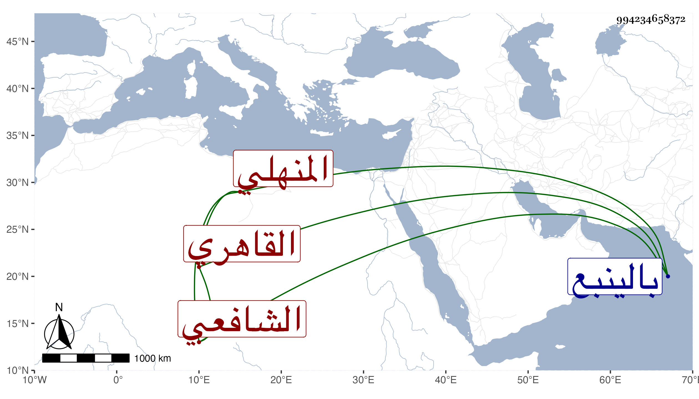

0902Sakhawi.DawLamic.ITO20230111-ara1.EIS1600.994234658372
Biography ID: 994234658372
748
محمد بن عبد الرحمن بن سليمان بن داود بن عياد بتحتانية ابن عبد الجليل بن خلفون حافظ الدين أبو الفضائل بن الزين المنهلي الأصل القاهري الشافعي الماضي أبوه . ولد في عصر يوم الجمعة حادي عشر ذي القعدة سنة تسع وستين وثمانمائة ، ونشأ في كنف أبويه فحفظ القرآن والمنهاج وجمع الجوامع والألفيتين وعرض علي في جملة الجماعة وأسمعه أبوه البخاري على الشاوي وبعضه على عبد الصمد الهرساني ، وتعب والده في معالجته من رياح الشوكة حتى خلص وكان على غير القياس ، وكذا سمع على غيرهما ولازمني في قراء الألفية وغيرها وكتب القول البديع وغيره من تآليفي وقرأ قليلا على الشمس بن سولة والبدر حسن الأعرج وغيرهما كياسين البلبيسي والسمنودي في الفقه والعربية وعلى النور الطنتدائي في الفرائض والبدر المارداني في الوسيلة كل ذلك قليلا وكذا حضر على الزين زكريا وغيره ، واستقر في جهات أبيه بعده ومن ذلك تدريس النابلسية وناب عنه فيه ابن سولة وغيره ، ثم زوجته أمه بأخت زوج أخته ابن أصيل وتعبابها ففارقها واتصل بغيرها واحدة بعد أخرى ، ولم ير راحة بحيث احتاج إلى التكسب في حانوت بسوق أمير الجيوش ورغب عن بعض وظائفه لذلك ، وعلى كل حال فهو ضعيف الحركة مع فهم وعقل . وقد حج ومعه عياله في سنة ثمان وتسعين بحرا وجاور ثم رجع مع الموسم وبلغنا تخلفه بالينبع ثم لم أعلم ما اتفق له .
